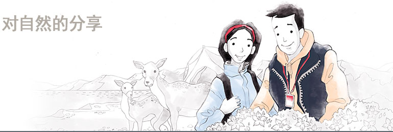
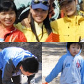

社会贡献
超越文化/艺术/环境的界 限的更大的分享的实践LF所定义的分享囊括着对人，对社
会和文化，乃至对自然的广泛的爱。我们承诺今后会持续开展各种
公益活动。

- 白头大干大纵走活动
- Lafuma所谓的白头大干是从我们民族的名山白头山(2,750m)开始，只经由山脊到达智异山天王峰(1,915m)形成的我国山脉的大干线，可以称得上是韩半岛的中心。
尽管由于南北分裂的痛苦，无法踏上白头大干的整条山脉，但以智异山为起点直至大韩民国国内最高到达地点香炉峰有800余名各界人士积极参与，并出售包含这段旅行“白头大干大纵走记录集”，呈现出白头大干的美丽的自然和生态环境。dd>
- 旗舰物种保护活动
- Lafuma于2010年6月与国立公园共同开展了“旗舰物种保护活动”。
旗舰物种是指反映特定地区的生态、地理、文化特性的标志性野生动植物，可以称得上是发挥着让人们了解一个地区的生态环境的旗帜一样的作用的动植物物种。
通过为了保护在人们的漠视中走向消亡的国立公园的旗舰物种而实施的此项活动，将Lafuma制作的旗舰物种T恤销售收益的一部分作为”国立公园旗舰物种保护事业”基金进行捐赠。

- Think GREEN 活动
- HAZZYS针对容易忽视环境的年轻一代，于2010年4月开展了为期一个月的向顾客们传达环境保护的重要性的ECO活动。
在此次ECO活动中推出了100%采用有机棉制作的5种T恤，并将销售收益的一部分捐赠给了环境团体。
另外还选定金范、金知硕、奇太映、李水京、金孝珍、闵孝琳等6位艺人作为ECO活动的宣传大使进行画报拍摄工作，树立起了环境保护的年轻而又新鲜的形象

- 关爱自然保护自然活动
- Lafuma为开展保护我们的自然和群山，提升价值的高度的活动，
从2004年到2005年每周周日都会开展以全国的主要山脉为起点，向登山客们分发采用自然分解材料制作的垃圾袋的”关爱自然保护自然”活动。